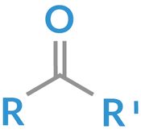
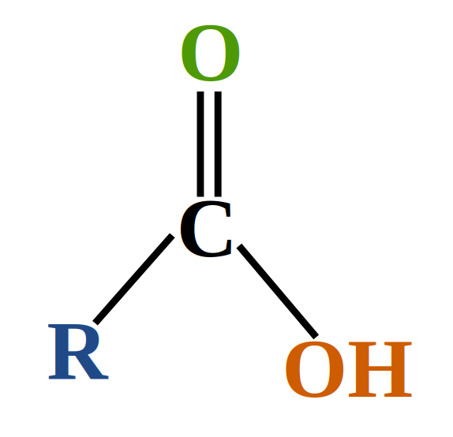

Ketone
| Vietnamese | Xeton ( ) |
|---|---|
| English | Ketone |
| Pronunciation | /ˈkiːtəʊn/ |
| Word type | noun (as labelled in the PDFs) |
Topic 1 — Meaning (Vietnamese)
Xeton ( )
Meaning (English)
A chemical compound containing a carbonyl group (C=O) bonded to two carbon atoms. (Xeton là hợp chất hữu cơ có nhóm carbonyl (C=O) liên kết với hai nguyên tử carbon. )
Example
Ketones contain a carbonyl group bonded to two carbon atoms. (Xeton chứa một nhóm carbonyl liên kết với hai nguyên tử carbon.)
Images from the PDFs


